学龄期 6-12 岁
小学阶段的写作业、分班、家长会与升学陪读。
听说你们想看我的双胞胎鸡娃现场...
文|圆圈妈妈 日常鸡娃ING.... 我给圆圈兄弟布置了一篇英语阅读理解，其中有一道单词连线题，有点难度。 结果出来了：…
2025-09-05
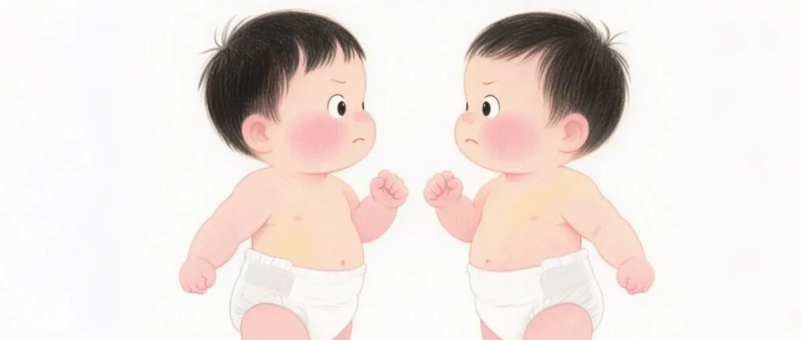
双胞胎：你永远不会一个人玩，但也永远打不完 文|圆圈妈妈 生孩子这事儿吧， 单胎是抽卡，双胎是连抽。 抽到了孖仔，恭喜你，自带搭子，买一送一。 双胞胎，真的自带CP… 2025-08-01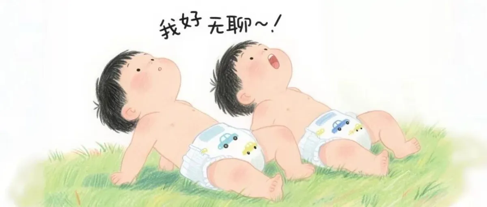
别信“双胞胎越大越好带”，都是假的！ 文|圆圈妈妈 很多人私信问我： “双胞胎什么时候最好带？” 我跟你们讲真话吧—— 只要有人帮你，什么时候都好带； 只要你… 2025-07-25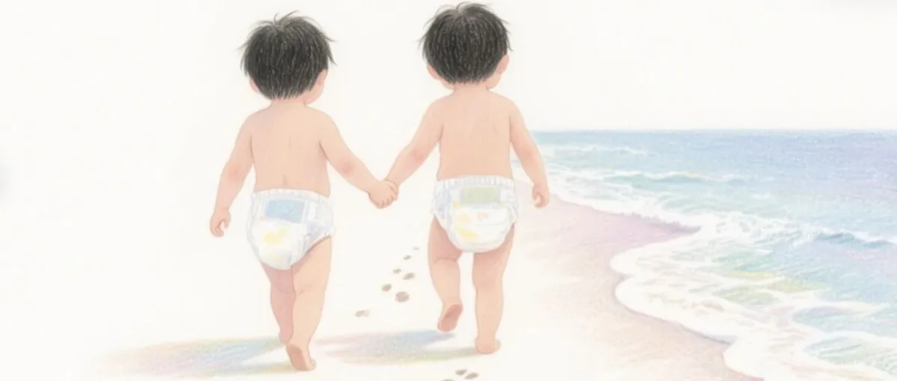
原来这就是双胞胎的“特殊待遇” 文|圆圈妈妈 上周，带圆圈兄弟去儿保科测骨龄。 挂号系统只抢到一个号，是圆圆的，圈圈的没挂上。 我心想，到时候现场跟医生… 2025-07-18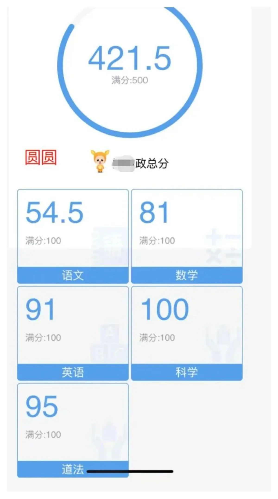
双胞胎，同卵“不同命” 文|圆圈妈妈 你能想象吗？ 双胞胎在一个班，一个考得好、一个考得差， 当妈的心理状态是啥？ 一半想开庆功宴喝香槟， 一半… 2025-07-11 为什么给双胞胎拍照，总想要“复制粘贴”效果 文|圆圈妈妈 前几天带圆圈兄弟去拍亲子照， 纪念他们10岁生日， 我脑子里已经剪好了成片： 兄弟俩并肩坐着，表情默契，动… 2025-07-03 双胞胎的家长群， 是真·大BOSS，还是纸老虎？ 文|圆圈妈妈 你知道吗， 有位双胞胎家长在留言里说得特别真实： “我不是怕分班，我是怕家长群。” 我当时就想说——懂你，… 2025-06-25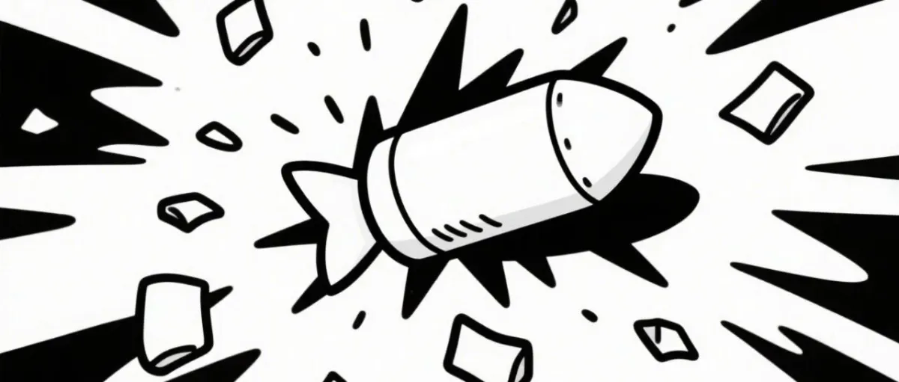
双胞胎同班=方便接送， 是糖衣炮弹 文|圆圈妈妈 评论区刷到这条留言时，我正站在校门口，等崽放学。 一个崽已经早早走出来了， 另一个，没看见， ——据说被老… 2025-06-20 双胞胎的家长会，才是真·冤大头！ 文|圆圈妈妈 我发现，很多双胞胎家长，心里清楚得很：分班其实更有利于双胞胎各方面的发展。 很想给孩子分班。 但一想到，两… 2025-06-17 学5分钟，吵1小时？这3招让双胞胎秒变学习搭子 文|圆圈妈妈 如果你正在引导双胞胎互相提问、学知识点， 比如记英语单词—— 那么你大概率会遇到以下名场面： 问来问去就是… 2025-06-10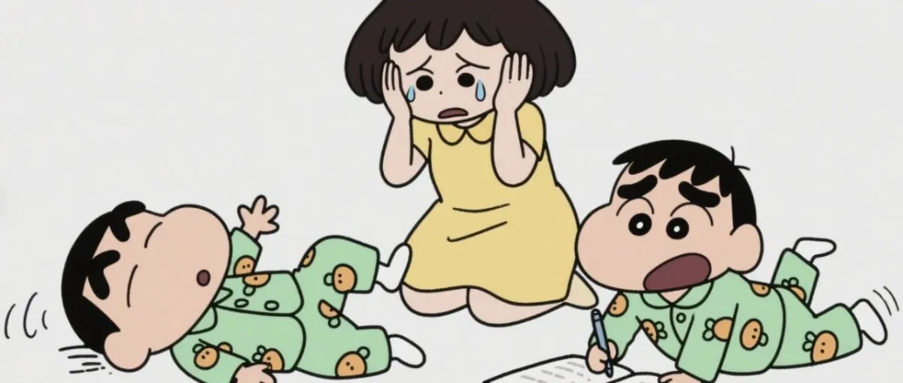
双胞胎一起写作业，不崩溃指南 文|圆圈妈妈 如果你家也有一对双胞胎，那你一定懂—— 写作业的时候，根本不是陪娃， 是上坟。 一个说：“妈...他抢我橡… 2025-05-30 双胞胎这样“比一比”，真香了！ 养一对双胞胎到底是“加倍幸福”，还是“加倍头疼”？ 在学习这件事上，答案可能远比你想象的更有趣。 只要用对方法，双胞胎之… 2025-05-28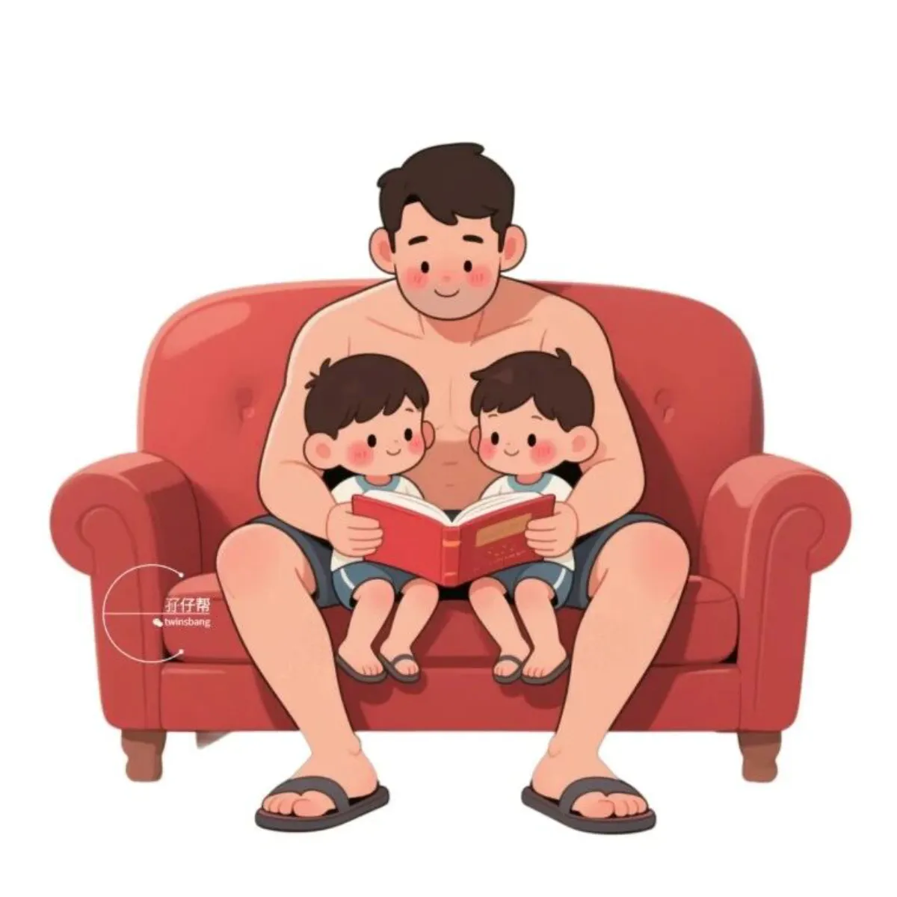
亲子共读， 双胞胎爸爸只活了3页 图文|圆圈妈妈 起初，我本着 “亲子共读、其乐融融” 美好愿景， 抱着双胞胎开始读书。 一开始确实不错， 两娃窝在我的怀… 2025-05-23 撒贝宁带双胞胎骑行上热搜：为啥人家出游像度假，我们却像逃难？ 文|圆圈妈妈 前几天，撒贝宁一家四口在河北三河红叶谷骑行的画面冲上热搜。 他和妻子李白，带着一对双胞胎儿女，全副武装身穿… 2025-05-16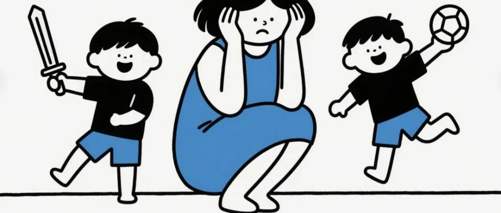
辅导双胞胎写作业：树懒大战喷火龙 文|圆圈妈妈 不管是少女怀春，还是嫁作人妇，我一直以为自己是个挺有耐心的人。 直到——初为人母，圆圈兄弟出生了。 别看这… 2025-05-13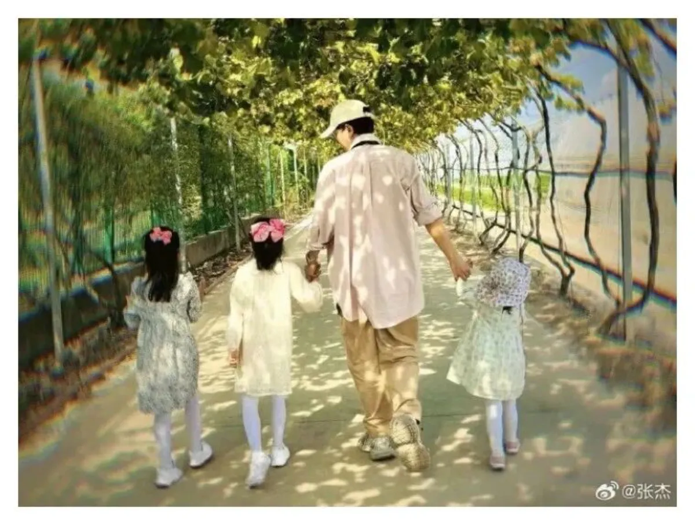
有的人天生就是双胞胎妈妈， 说的就是谢娜 文|圆圈妈妈 前两天，做五一假期的旅行攻略， 刷到谢娜一家五口在迪士尼游玩的照片: 三个女儿穿公主裙俏皮可爱， 她的老公… 2025-05-09 我曾偷偷偏爱“更懂事”的双胞胎弟弟，现在后悔了 文|圆圈妈妈 这句话，说出来有点残忍。 但我必须承认： 在我以为自己爱得很公平的那几年， 我却总是，不自觉地，把更多的目… 2025-05-07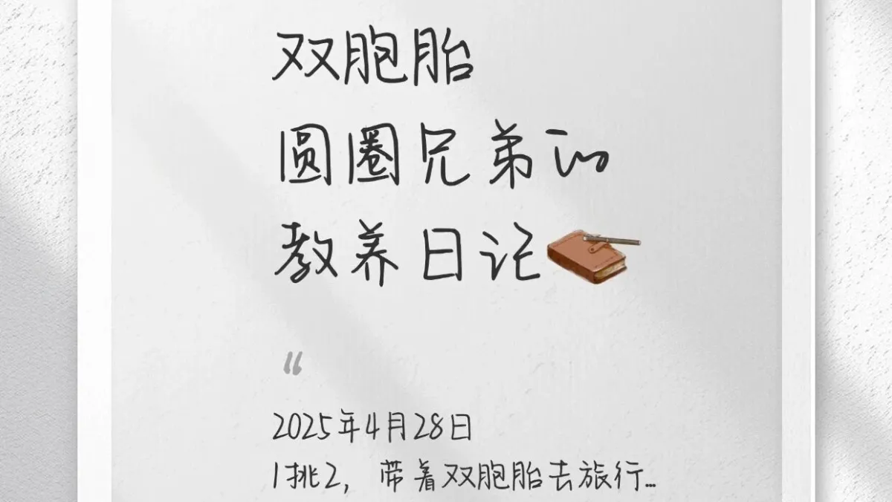
双胞胎圆圈兄弟教养日记01 \x26lt;a class=\x26quot;wx_topic_link\x26quot; topic-id=\x26… 2025-04-29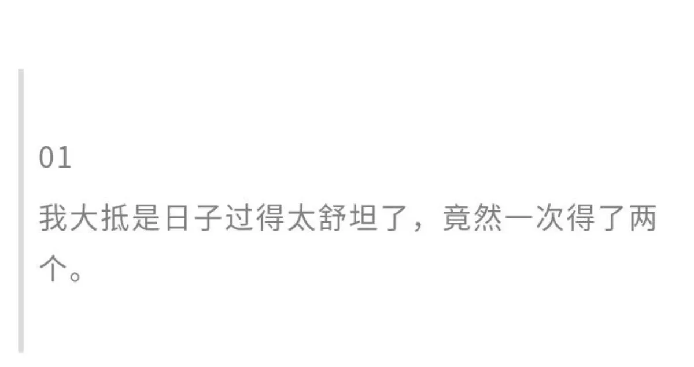
低调官宣双胞胎出生，用鲁迅的方式怎么说 图文|圆圈妈妈 -END- 双胞胎出生后， 该如何“低调”官宣？ 是发红包？晒B超？ 还是直接甩一张户口本？ 我原本只想… 2025-04-24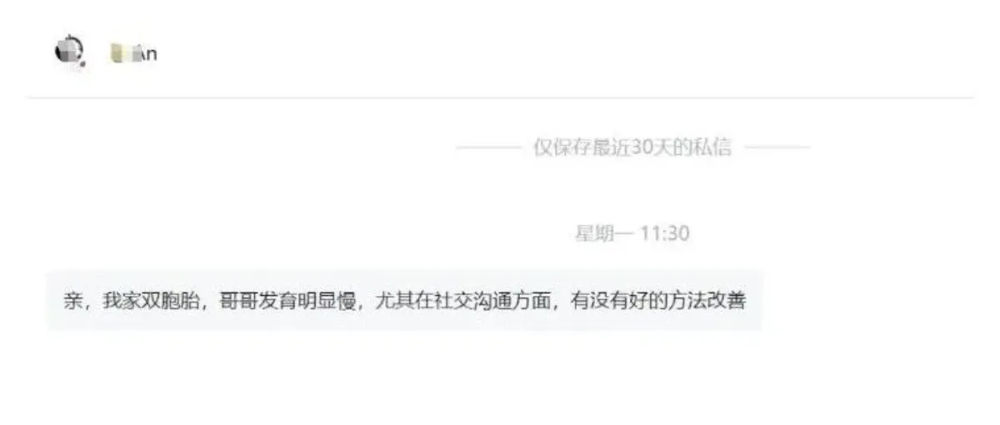
“一个会说话、一个还不会”——我家双胞胎让我一度以为哥哥发育迟缓 文|圆圈妈妈 后台有家长私信我： “亲，我家双胞胎，哥哥发育明显慢，尤其在社交沟通方面，有没有好的方法改善？” 看到这句… 2025-04-18